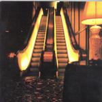

| Artist: | Alamaailman Vasarat |
| Title: | Vasaraasia |
| Label: | Laskeuma Records LR001 |
| Length(s): | 52 minutes |
| Year(s) of release: | 2000 |
| Month of review: | [03/2001] |
| 1) | Mamelukki & Musta Leski | 2.45 |
| 3) | Lakeus | 3.22 |
| 4) | Unikkotango | 2.46 |
| 7) | Jano | 3.21 |
| 8) | Tankkaustunti | 4.42 |
| 9) | Merikäärme | 4.09 |
| 10) | Häntä Hellii Käärme | 4.07 |
| 11) | Hakumies | 7.51 |
| 12) | Delhin Yöt | 3.04 |
| 13) | Siltojen Alla | 5.28 |
The music on Perikunta is both a bit easier, but also has its changes of pace. At some point I have the impression of listening to easy listening music from a few decades ago, the music has a kind of twenties jazz feel. At another time they throw in some cello and the music becomes much darker.
Lakeus (Open Plain) opens moodily with pump organ. Long drawn tones make for a wonderful atmosphere especially after the cello comes in. Music for a funeral, slow and ponderous.
Unikkotango is of a course a tango (progressive rock you can actually dance too!). Again, the music has a lazy jazz feel, music that sounds ancient because of its sound, with the pump organ sounding like a kind of accordion. The music on this track is rather easy and bouncy.
Asuntovelka opens in a more off-beat way. Heavy guitars barge back in here and although the horns still dominate there's plenty more power now. The organ only serves to punctuate the brassy sound lined with rhythm guitar. Quite a bit of contrariness in here as well, in case you missed it.
Kebab Or Your Live! is the translation of the next one, Kebab Tai Henki. Music for dervishes I would say. This is high speed ethnic rock, but of course not straight on as some would expect. The pace goes down at some point to slowly build-up again to the end.
Jano is a slow piece, with repetitive melodies in the brass section and easy-going percussion. Music from the Middle-East it sounds like.
Tankkaustunti is a heavy plodding piece with mainly guitars and percussion and weird meanderings on the organ in the back. During the track you think where this will lead, but finally then the drums set-up a roll and the horns set in. I am thinking of soundtrack music here, with some of the majesty of Morricone (in his spaghetti western time). The song then takes plenty of time winding down.
Merikäärme was over before I knew it, it did not add much to what we already knew. In Häntä Hellii käärme the pace goes up a bit with percussive piano and jazzy drums, all flowing and melodic. Later on the music becomes more involved and "filled". The music does keep its soundtrackish character. Then however we move into a great part where the piano tinkles and the cello makes for some great tension.
Hakumies is by far the longest song on the album. Like earlier on I sometimes have this impression of the music being part of a kind of soundtrack.
Delhin yöt (Nights of Delhi) is the next one up. Fast paced and short it is over before you know it. The music has a James Bond ring to it, but this is only until the guitars break out and audibly hunt down the brass section, who seem to run away screaming.
Siltojen Alla is the heavy closer of the album. Heavy, but slow. The melody sounds familiar from earlier on. The cello wraps it all up.
Addendum: all references to rhythm guitar should be replaced by "cello through distortion". I later heard that that is how they did it.